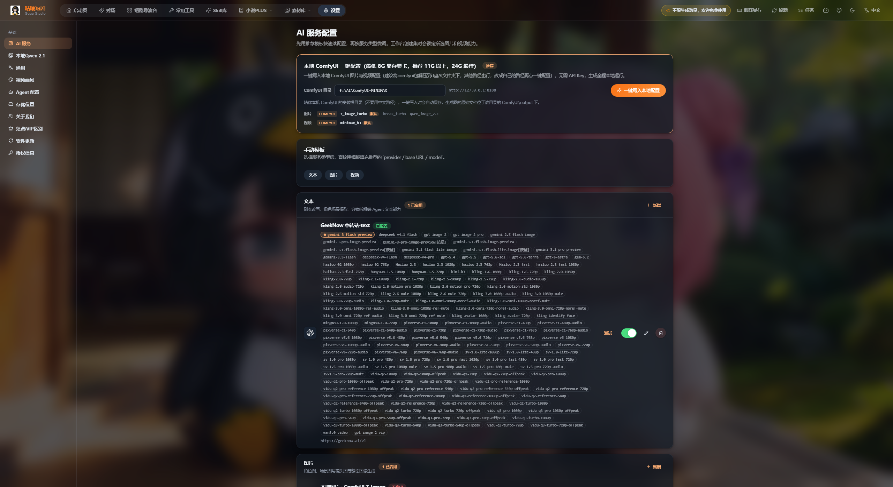
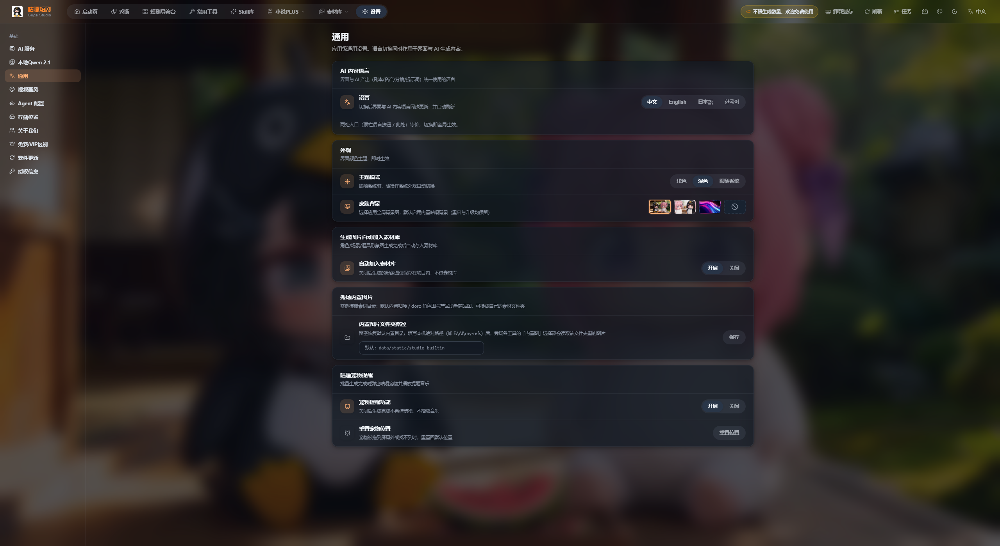
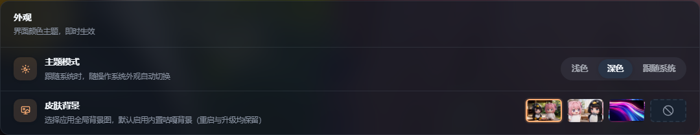
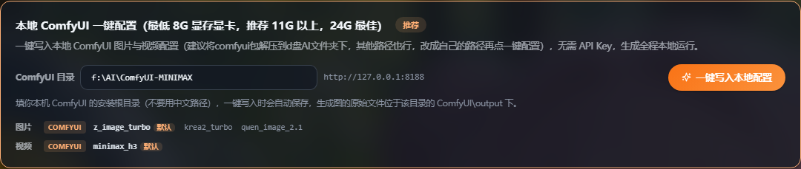
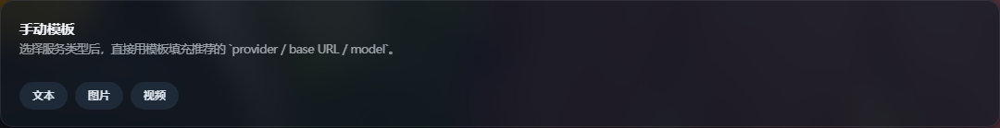
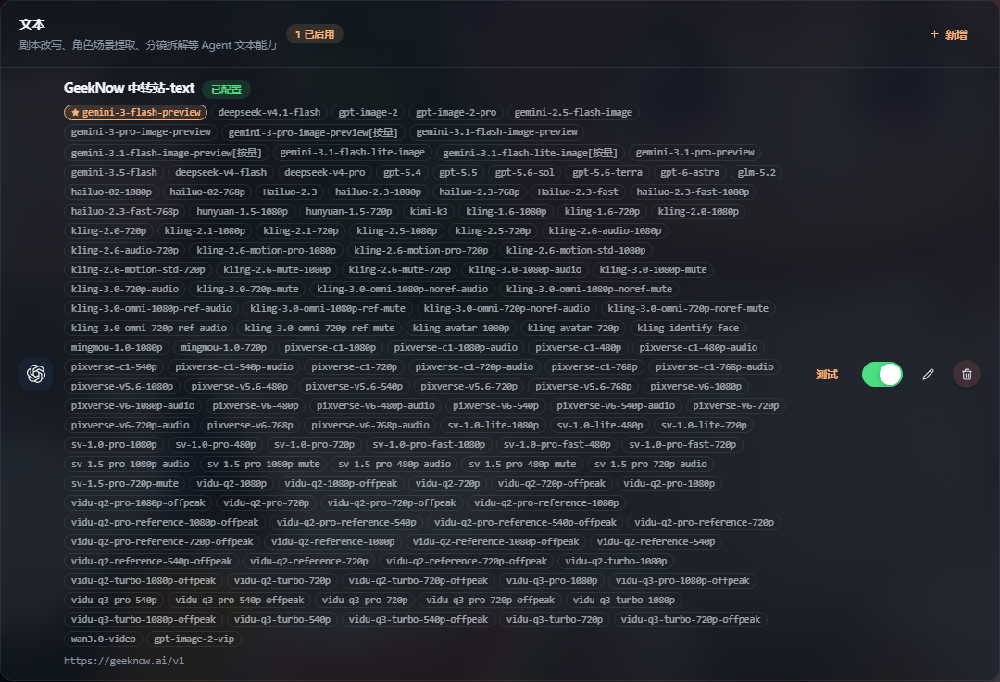
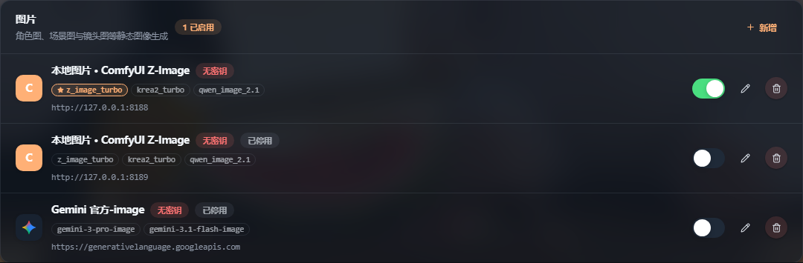
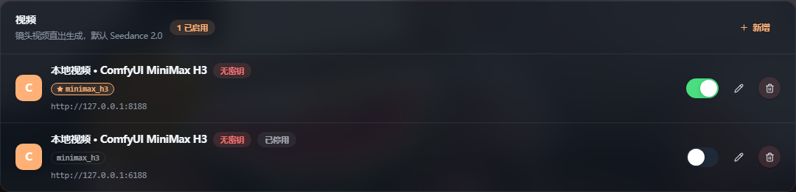
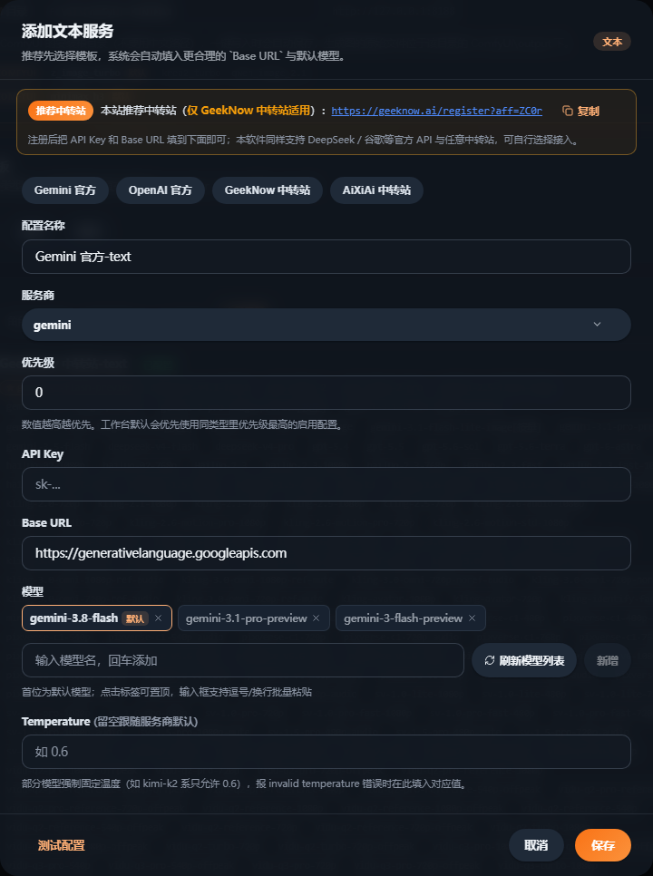

把文本、图片、视频三类 AI 能力接进咕嘎AI漫剧。本教程按“先用推荐模板快速落配置，再按服务类型微调”的官方思路， 覆盖本地 ComfyUI 一键配置、中转站 / 官方 API 手动接入、模型与优先级设置、连通性测试，以及深色主题的开启位置。 文中所有界面图均取自软件真实运行界面（2560×1400 宽屏、深色模式）。
先认识这一页的整体结构：上方是「快速配置」，下方按 文本 / 图片 / 视频 三张卡片管理每一服务。

页面顶部写着：
“先用推荐模板快速落配置，再按服务类型微调。工作台创建集时会锁定所选图片和视频能力。”
也就是说：先在这里配好，再去短剧导演台创建集；一旦集建好，该集用的图片 / 视频能力就固定了，事后改配置不影响旧集。
本文所有截图均为深色模式。若你的界面还是浅色，按本节两步切换，长时间看图更护眼。


通用。浅色 → 深色 → 跟随系统 之间循环切换。
有 NVIDIA 显卡（最低 8G 显存，推荐 11G 以上，24G 最佳）且本地已装好 ComfyUI 的用户，走这条路最省事：无需 API Key，生成全程本地运行。

comfyui 包解压到 D 盘 AI 文件夹下，例如 D:\AI\ComfyUI-MINIMAX。其他路径也行，改成自己的即可。http://127.0.0.1:8188，与 ComfyUI 默认端口一致，一般不用改。z_image_turbo（默认）、krea2_turbo、qwen_image_2.1minimax_h3（默认）ComfyUI\outputComfyUI\output 的那一层），不是 output 子目录，也不要指到工作流文件所在的 models 目录。
没有本地显卡、或想用云端 API / 中转站，就用手动模板：先选服务类型，再从模板填好 provider / base URL / model，你只需补 API Key。

| 模板 | 服务商 provider | Base URL | 预置模型 |
|---|---|---|---|
| 文本 | openai / gemini | https://geeknow.ai/v1、https://api.aixiai.top/v1、官方地址 | gemini-3-flash-preview、gpt-5.6-terra 等 |
| 图片 | gemini / openai / comfyui | 官方地址 / http://127.0.0.1:8188 | gemini-3-pro-image、gpt-image-2、z_image_turbo… |
| 视频 | volcengine / minimax / comfyui | 火山引擎 / MiniMax 官方 / 本地 8188 | doubao-seedance-2-0 系列、MiniMax-H3、minimax_h3 |
模板只是预填，随后弹出的表单仍可自由修改服务商、Base URL、模型与优先级。
看懂一张配置卡片上的每个元素，后续排查会非常快。



| 元素 | 含义 | 怎么用 |
|---|---|---|
| 已配置 / 无密钥 | 该服务是否填了 API Key。本地 ComfyUI 显示「无密钥」属于正常 | 云端服务必须显示「已配置」 |
| 已停用 | 该条目当前处于关闭状态，不参与调用 | 用右侧开关打开即可 |
| ⭐ 模型标签 | 该类型的默认模型，工作台优先调用 | 点其他标签可把它设为默认 |
| 灰色模型标签 | 备用模型，同类型内可随时切换 | 点击即置顶为默认 |
http://… | 该服务的 Base URL | 排错时先核对这一行 |
| 开关 / 铅笔 / 垃圾桶 | 启用停用 / 编辑 / 删除 | 删除不可撤销，删前先确认没有集在用 |
| 测试 | 仅文本服务提供：立即验证连通性 | 改完 Base URL / Key 立刻点一次 |
在任意服务卡点「＋ 新增」，或点已有条目的铅笔图标，就会打开这个弹窗。

GeekNow 中转站，并附注册链接；提示可把 API Key 与 Base URL 填在下方「GeekNow 官方 API 与注册中转站」处，也可自行选择服务商。gemini、openai、volcengine（火山引擎）、minimax、comfyui。sk-…）。云端服务必填；本地 ComfyUI 留空即可。/v1），本地填 http://127.0.0.1:8188。invalid temperature，按提示填固定值（如 kimi-k2 系只允许 0.6）。不知道选谁？按你的硬件条件对号入座。
| 方案 | 适合谁 | 配置动作 | 成本 |
|---|---|---|---|
| 方案一 全本地 |
有 NVIDIA 显卡（8G 显存起），追求不花钱、素材不出本机 | 路线 A 一键写入；文本能力另接一个云端文本 API 或本地模型 | 电费，无 API 费用 |
| 方案二 云端主力 |
没有独显，或要更高质量的图/视频 | 手动模板：文本选 GeekNow / AiXiAi 中转站，图片选 Gemini 或 gpt-image-2，视频选 Seedance 2.0 或 MiniMax H3 | 按量计费 |
| 方案三 本地 + 云端双保险（推荐） |
正式生产，不想在赶稿时卡在模型上 | 本地 ComfyUI 优先级 99，云端同类型优先级 50；本地失效时自动回落云端 | 按量计费 |
说明本地服务没起来或地址不对。
http://127.0.0.1:8188127.0.0.1 而不是 localhost，避免 IPv6 解析差异部分模型（如 kimi-k2 系）只接受固定温度。在弹窗 Temperature 处按提示填对应值（常为 0.6），不要留空。
「刷新模型列表」依赖端点的 /v1/models。部分中转站未开放该接口，此时手动输入模型名即可，不影响调用。
不建议。官方明确提示不要用中文路径，容易出现工作流加载失败或节点报错，请迁移到纯英文/数字路径。
照着勾一遍，确认 AI 能力已就绪，再去短剧导演台创建集。
http://127.0.0.1:8188。